地政学
セントルイスはミシシッピ川とミズーリ川が近づく内陸交通の結節点で、西部への玄関として国家拡張の記憶を抱える。河港、鉄道、高速道路、州境をまたぐ都市圏が、中西部と南部の境目にある政治的な位置を示す街です。

🇺🇸 アメリカ合衆国 / 中西部 / World City Atlas
ミシシッピ川の河港から西部への玄関となり、工業、物流、ブルース、野球、医療研究、郊外化、人種分離の記憶を抱える中西部の都市圏です。
都市の骨格
セントルイスはミシシッピ川とミズーリ川の結節点に近く、東西南北の物流、移民、産業、音楽、住宅政策が交差してきた。輝くアーチの背後に、川と郊外と分断の歴史がある。
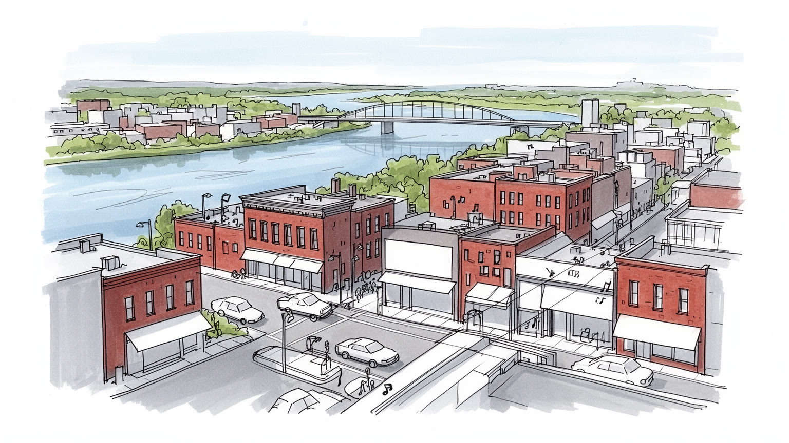
セントルイスはミシシッピ川とミズーリ川が近づく内陸交通の結節点で、西部への玄関として国家拡張の記憶を抱える。河港、鉄道、高速道路、州境をまたぐ都市圏が、中西部と南部の境目にある政治的な位置を示す街です。
食品、農業関連、医療研究、金融、物流、航空宇宙、大学、ビール産業が都市圏を支える。港湾、倉庫、病院、研究室、工場、配送の仕事が近接する一方、中心市と郊外の雇用差、通勤、技能訓練の格差も見える街です。
ブルース、ジャズ、ゴスペル、野球、カトリック教会、黒人教会、移民の祭礼が都市の記憶を作る。フランス植民地期からの地名、ビール文化、近隣ごとの教会と学校も、日常の帰属意識を支える層で今も続く街です。
旅行者はアーチ、フォレストパーク、博物館、球場、川辺を巡るが、住民には住宅の空洞化、治安、学校、医療、洪水、公共交通、郊外との格差が切実である。観光名所と生活課題を同じ地図で読む街でもあるのです。
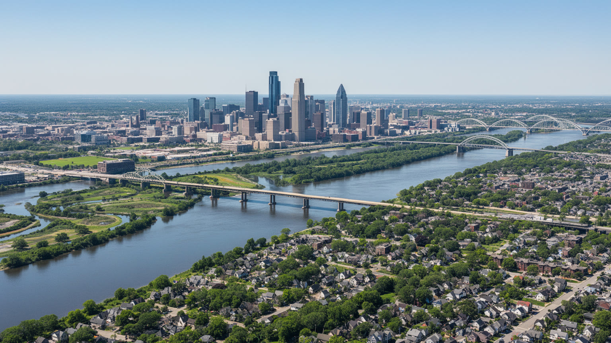
セントルイスを読む入口は、都市がミシシッピ川の西岸に立ち、少し北でミズーリ川、さらに下流でイリノイ川の水系とも結びつく内陸交通の要所にあることだ。大河は景観の背景ではなく、農産物、石炭、鋼材、化学品、穀物、燃料を動かす物流の背骨であり、東岸のイリノイ側と西岸のミズーリ側を分ける州境でもある。川沿いの低地、堤防、橋、鉄道ヤード、倉庫、工場、港湾施設は、街の中心がなぜこの場所に置かれたのかを物語る。一方で、洪水リスク、汚染、河岸の分断、高速道路による都心と水辺の切断も都市の条件になった。ゲートウェイ・アーチから見る川は象徴的で美しいが、実際の都市は川へ近づきにくい場所も多い。セントルイスの地理は、東西をつなぐ交通と、川が作る境界の両方を持つ。河港都市としての力を理解するには、水面だけでなく、橋を渡る通勤、貨物線、河川管理、低地の住宅、郊外へ伸びる高速道路を同じ地図に置く必要がある。川は中心市の顔であると同時に、都市圏の周縁を決める力でもある。東岸の工業地、北側の合流点、南へ続く氾濫原を合わせて見ると、セントルイスは水運の都市であり、洪水と州境に常に交渉してきた都市だと分かる。川筋を意識すると、都心、郊外、港、農地が別々ではなく、一つの流域で結ばれていることが見えてくる。その視点が街を立体化する。
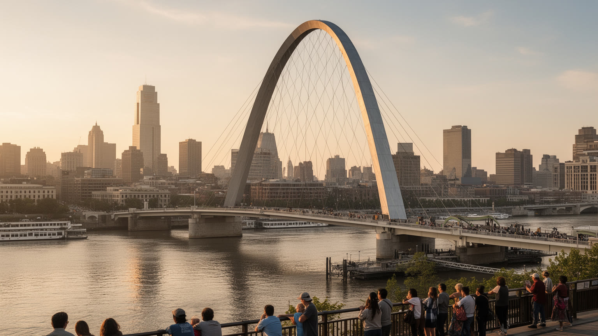
セントルイスは「西部への玄関」として語られることが多い。フランス系交易拠点、毛皮商人、河船、ルイジアナ買収、探検隊、移住者、鉄道、博覧会の記憶が重なり、ゲートウェイ・アーチはその物語を巨大な形にした。だが、西へ進む明るい物語だけでは都市を正確に読めない。先住民の土地の喪失、奴隷制、ドレッド・スコット裁判、南北戦争をめぐる境界州の緊張、移民労働、黒人コミュニティの形成も、この街の歴史の中心にある。アーチの足元にある旧裁判所は観光名所であると同時に、自由と市民権をめぐる争いの場所でもある。博覧会や都市改造は近代性を示したが、誰の家が壊され、誰の記憶が残されたのかも問われる。セントルイスの歴史は、国家拡張の誇りと排除の痛みが同じ都心に刻まれている点に重みがある。玄関という言葉を使うなら、そこを通った人だけでなく、押し出された人、渡れなかった人、記録されなかった人の視点を含めて読む必要がある。街の博物館、川辺の記念碑、古い市場、墓地、教会をたどると、開拓の物語が一方向の前進ではなく、交易、暴力、法律、信仰、労働が絡む複雑な都市史だったことが見えてくる。記念碑を眺めるだけではなく、誰が記念され、誰が沈黙させられたのかを考える時、街の象徴はより深い歴史の入口になる。観光の明るさは、その問いを避けない時に初めて厚みを持つ。
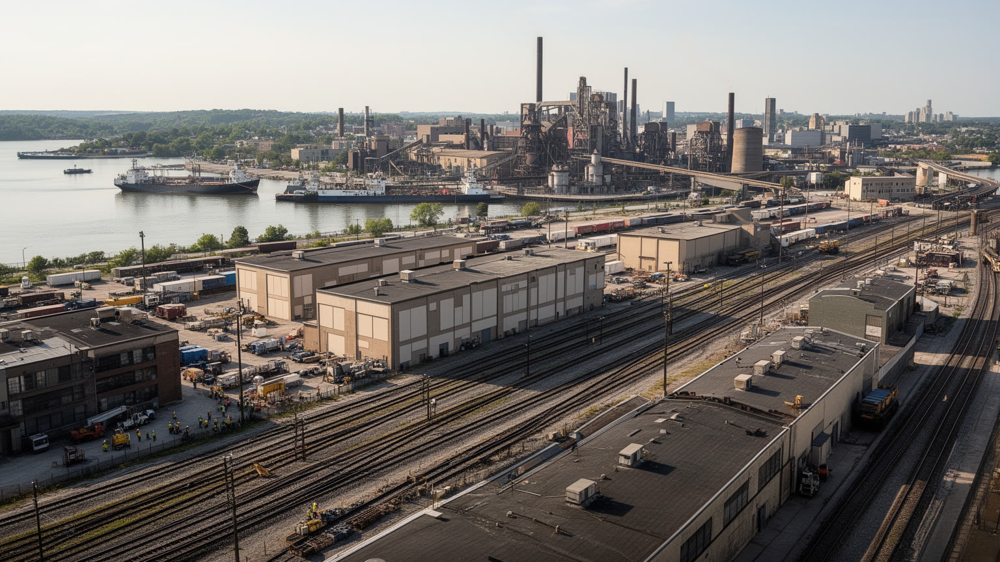
セントルイスの経済は、古い工業都市という一言では足りない。ミシシッピ川の河港、鉄道網、州間高速道路、内陸の倉庫、農業地帯への近さが、食品、穀物、化学、金属、建材、配送、ビール、航空宇宙、医療関連産業を結びつけてきた。都心の高層オフィスよりも、工場、研究所、物流施設、病院、大学、郊外の企業キャンパスが都市圏の雇用を分散している点が重要である。食品と農業関連企業は中西部の生産地と市場をつなぎ、病院と大学は高度な専門職を育て、港湾と鉄道は重い貨物を動かす。だが、製造業の再編は労働者の技能、賃金、居住地に大きな影響を残した。中心市で失われた工場跡や空き地は、単なる衰退の景色ではなく、産業の配置が変わった結果である。物流の便利さは、トラック交通、倉庫労働、環境負荷、低賃金のシフト勤務も伴う。セントルイスの産業を見る時は、企業名やGDPだけでなく、川の港、郊外の研究拠点、配送の夜勤、職業訓練、公共交通の届き方まで読む必要がある。産業の重心が郊外へ移るほど、車を持たない住民は仕事へ届きにくくなる。経済の強さを地元の生活へ戻すには、雇用の場所と住宅、学校、交通を切り離さず考えることが欠かせない。倉庫の増加は雇用を作る一方、道路の大型車、空気、騒音、労働時間にも影響するため、成長の質が問われる街なのだ。
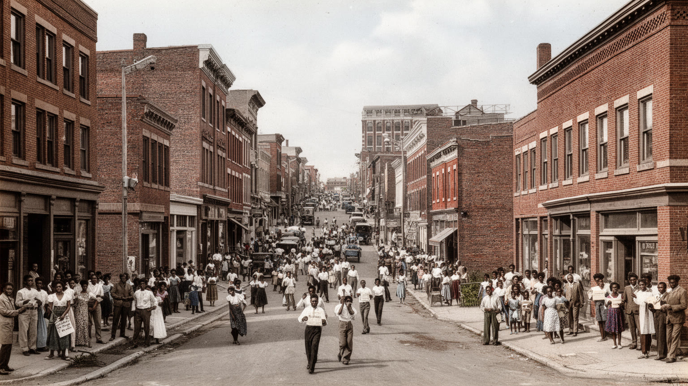
セントルイスを理解するうえで、人種分離と格差は避けて通れない。レッドライニング、制限的な住宅契約、学校区の境界、都市高速道路、公共住宅の解体、郊外化、金融アクセスの差は、黒人住民と白人住民の居住地、資産形成、通勤、教育、健康を長く分けてきた。北側の地区に集中する空き家や空き地、南側や西側との住宅価格の差、郊外自治体の細かな分裂は、個人の選択だけでは説明できない制度の跡である。ファーガソンをめぐる抗議が世界に知られたように、警察、裁判、罰金、自治体財政、公共交通の問題も都市圏の人種格差と結びつく。分断は地図上の線としてだけでなく、どの病院へ行けるか、どの学校へ通えるか、夜にどの道を歩けるか、家を担保に事業を始められるかとして現れる。セントルイスの都市再生を語るなら、都心の投資や新しい施設だけでなく、歴史的に不利な地区へ資本、交通、医療、教育、住宅修繕が届くかを見る必要がある。格差は過去の問題ではなく、都市の未来を決める現在の構造である。この構造は住民の語り方にも影響する。郵便番号、学校区、警察署、郊外自治体の名が、機会や不信の記号になる。都市を良くするには、分断を偶然の地理ではなく政策の結果として扱う姿勢が必要だ。信頼を取り戻す作業は、住宅、学校、交通、司法を一緒に直す長い都市政策になる。
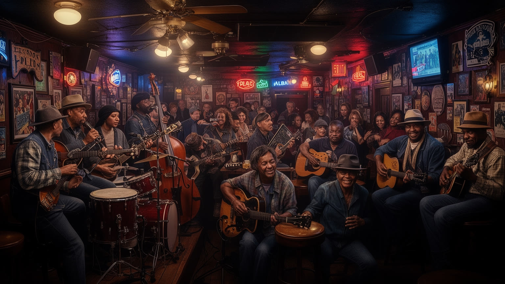
セントルイスの文化は、川を行き来する人、南部から北上した黒人コミュニティ、移民、労働者、教会、劇場、クラブが作った音の記憶を持つ。ブルース、ラグタイム、ジャズ、ゴスペル、ソウル、ヒップホップは、単なる娯楽ではなく、移動、差別、仕事、祈り、夜の社交を表す都市の言葉である。スコット・ジョプリンのラグタイム、チャック・ベリーのロックンロール、マイルス・デイヴィスの周辺的な記憶、地元クラブや教会の音楽は、セントルイスが中西部と南部の文化的境界にあることを示す。音楽は観光資源にもなるが、実際には小さな会場、楽器店、学校、教会の聖歌隊、地域の祭り、ラジオ、家族の記憶によって支えられている。再開発や治安の変化で夜の街の場所が変われば、音楽の育つ環境も変わる。セントルイスの音楽文化を読むには、有名人の名前だけでなく、黒人地区の歴史、労働後の社交、礼拝、移動の経験を合わせて見る必要がある。音楽はこの街の誇りであると同時に、誰が都市の物語を語れるのかを問う公共の記憶でもある。学校のバンド、教会の合唱、夏の野外演奏、近所のバーに残る即興性は、公式な文化施設だけでは測れない都市の厚みを作る。音を聞くことは、移動してきた人びとの生活史を聞くことでもある。演奏の場を守ることは、街が自分自身を語る声を守ることでもある。
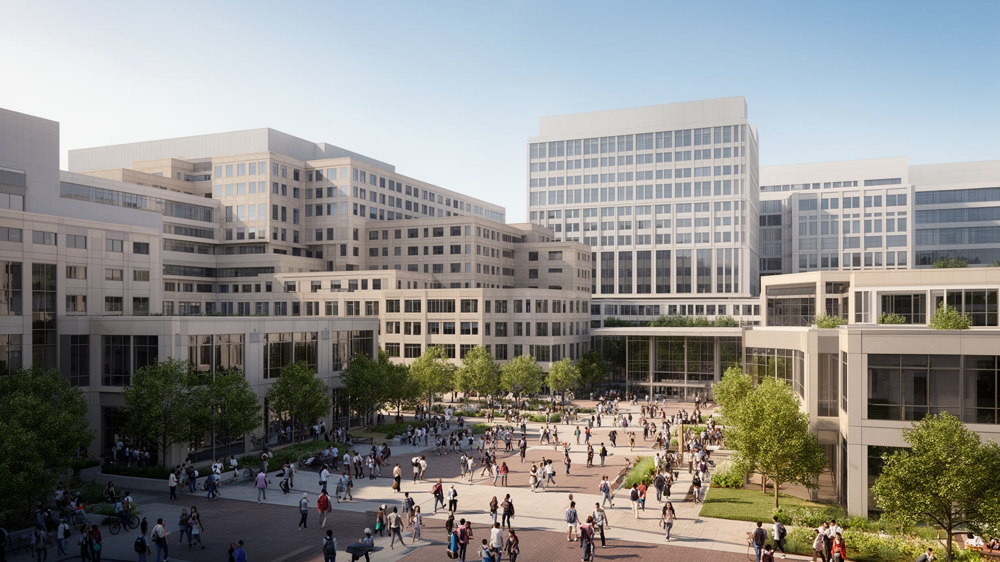
セントルイスの現代経済で重要なのが、医療、生命科学、大学研究の集積である。ワシントン大学、セントルイス大学、主要病院、医学研究機関、バイオテクノロジー企業、周辺のスタートアップ支援は、都市圏に高度な専門職と学生を呼び込む。病院は雇用主であるだけでなく、地域の健康格差を映す場所でもある。研究室では先端医療や創薬、植物科学、データ解析が進む一方、都市の別の地区では保険、交通、食環境、住まい、慢性疾患、乳幼児死亡率の差が深刻である。医療研究都市としての強さは、世界的な論文や投資だけでは測れない。知識が地元住民の健康へどう戻るか、病院までの移動が可能か、研究開発の雇用が多様な住民へ開かれているかが問われる。大学と医療地区の周辺では再開発が進み、住宅価格や商業の性格も変わる。セントルイスを見る時、病院の白い建物と北側地区の健康課題を切り離してはいけない。医療研究はこの街の未来産業であると同時に、歴史的な不平等をどこまで縮められるかを試す公共インフラでもある。研究者、看護師、清掃、食堂、救急搬送、患者家族の滞在先まで含めて見ると、医療地区は知識産業である前に巨大な生活圏でもある。健康を支える仕事の広がりが、都市の雇用を厚くしている。研究成果を地域の予防医療や教育へつなぐ回路が、都市の信頼を左右する。
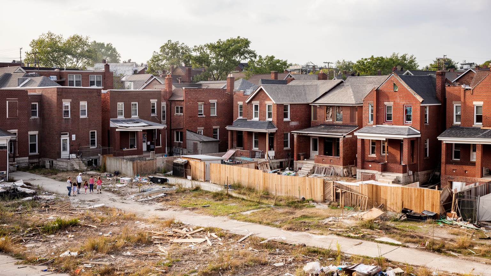
セントルイスの近隣を歩くと、赤レンガの住宅、教会、角地の店、学校、並木、公園、空き地、改修中の建物が細かく並ぶ。十九世紀から二十世紀初めの建築の厚みは大きな魅力だが、その保存状態は地区によって大きく違う。人口流出、郊外化、住宅ローン差別、税収減、学校の閉鎖、犯罪不安は、多くの近隣に空洞化を残した。一方で、歴史的住宅を修復する動き、移民の新しい商店、若い世帯の流入、地域農園、教会や非営利団体による支援もある。住宅問題は、空き家の多さと手頃な住まいの不足が同時に起きる複雑なものだ。安い家があっても修繕費、保険、治安、交通、学校、雇用が伴わなければ暮らしは安定しない。人気地区では家賃上昇が長年の住民を押し出す。セントルイスの住宅を見るには、建築の美しさだけでなく、所有、修繕、相続、税滞納、自治体サービス、通学路、近所の見守りを読む必要がある。近隣は都市の統計の単位ではなく、住民が歴史を背負いながら毎日生活を組み立てる場所である。家の前のポーチ、教会の掲示板、学校跡、角の商店は、都市の衰退と回復を測る小さな指標になる。修繕された一軒が希望になる一方、隣の空き家が不安を残す。住宅政策は建物数だけでなく、住民が近所に残れる関係をどう保つかまで含む。通りの顔を守ることが暮らしの安全にもつながるのだ。
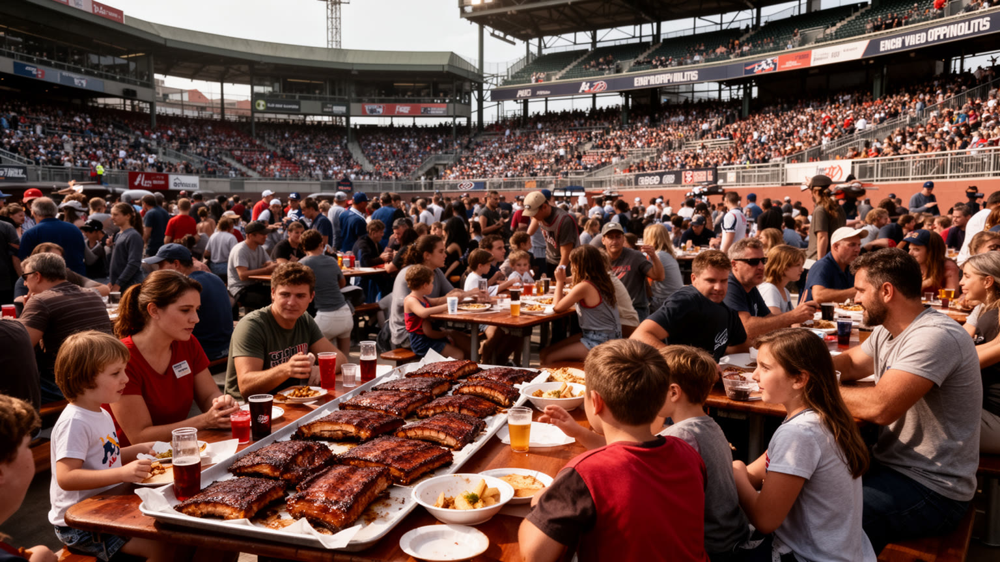
セントルイスの日常文化は、食とスポーツに濃く表れる。バーベキュー、トーステッド・ラビオリ、薄いクラストのセントルイス式ピザ、カスタード、地元ビール、近隣のダイナーやデリは、移民、労働者、家族の集まり、試合の日の習慣と結びついている。ビール産業は都市の産業史でもあり、ドイツ系移民、醸造、労働、広告、野球観戦の記憶を作った。カーディナルスの野球は、単なるプロスポーツではなく、世代を超えて都市圏を結ぶ共通言語になっている。球場周辺の再開発は観光と飲食を呼び込む一方、公共資金、雇用、都心の夜の使われ方をめぐる議論も生む。食文化も同じで、名物料理は楽しい入口だが、厨房の低賃金労働、食料アクセス、健康格差、地元店の家賃も見なければならない。セントルイスの食とスポーツを読むことは、住民がどこで集まり、何を誇り、どの記憶を家族へ渡すのかを見ることである。試合の日の赤い服、煙の匂い、店先の会話は、都市圏に散った人びとを一時的に同じ街へ戻す力を持つ。勝敗や名物料理は軽く見えて、郊外へ移った家族と中心市に残る店を結び直す合図になる。公共の広場やスポーツバーは、都市圏の分断を一晩だけ緩める舞台でもある。だから食とスポーツは余暇ではなく、都市の帰属を確認する日常の儀式でもある。味と応援が街の記憶をつなぐ力だ。
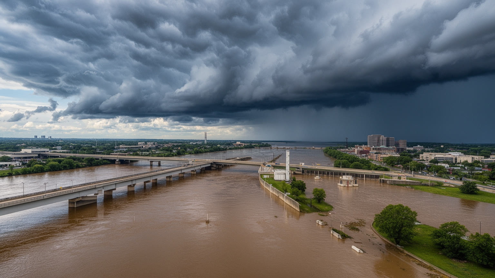
セントルイスの気候は、暑く湿った夏、寒い冬、激しい雷雨、竜巻を伴う荒天、ミシシッピ川の洪水リスクを持つ。内陸都市でありながら水の影響は大きく、上流の雨、雪解け、堤防、低地の土地利用、河川航行が生活と産業に直結する。大洪水は川沿いの町、農地、道路、鉄道、港湾施設を止め、物流と住民生活を同時に揺さぶる。都心は堤防や地形によって守られている部分もあるが、都市圏全体で見れば低地の住宅、工業地、郊外開発、排水路がリスクを抱える。猛暑も重要で、舗装面、古い住宅、冷房費、屋外労働、高齢者の孤立に影響する。気候変動が雨の強さと熱波を増すほど、セントルイスは河川管理だけでなく、木陰、住宅断熱、冷房支援、停電対策、避難情報を整える必要がある。洪水や暑さは全員に同じように来るわけではない。車を持たない世帯、低所得地区、高齢者、慢性疾患を抱える人ほど影響を受けやすい。セントルイスの気候を読むことは、大河の美しさと同時に、都市の備えが誰を守り、誰を取り残すのかを読むことである。公園の樹冠、雨水を受ける空き地、冷房のある公共施設、洪水警報の届き方は、景観より実用的な命綱になる。気候適応はインフラと福祉をつなぐ仕事である。川を制御するだけでなく、暑い日に休める場所を増やすことも都市の防災になる。日々の備えが差を生む。
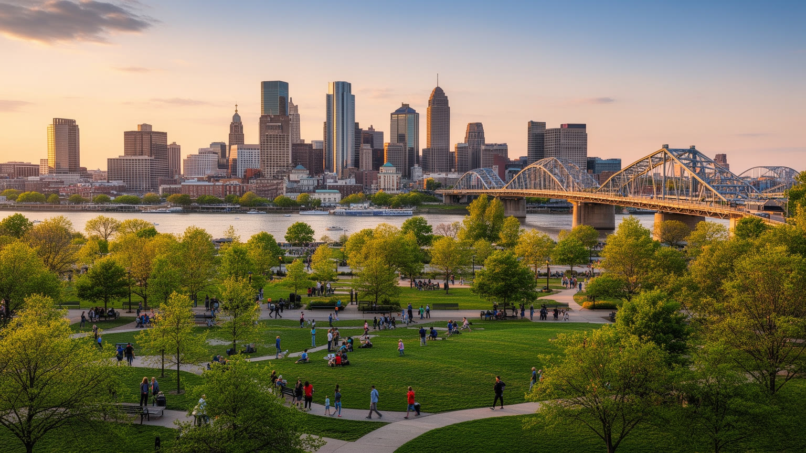
セントルイス観光の強さは、ゲートウェイ・アーチだけでなく、フォレストパークを中心とする公共文化の厚みにある。フォレストパークには美術館、歴史博物館、動物園、科学センター、池、芝生、ランニング路が集まり、多くの施設が無料または低負担で使える。これは都市の誇りであり、公共文化を広く開く仕組みでもある。アーチ国立公園、旧裁判所、ユニオン駅、球場、シティ・ミュージアム、植物園、ソウラードやザ・ヒルのような地区は、家族旅行、学習、食、スポーツ、建築をつなぐ。観光客にとっては巡りやすい都市だが、名所の分布は公共交通、治安イメージ、駐車場、地区間の所得差とも関わる。公園や博物館が豊かでも、そこへ誰が行きやすいかは別の問題である。セントルイスの観光を読むには、写真を撮る名所だけでなく、無料施設を支える税と寄付、学校遠足、近隣住民の使い方、川辺へのアクセス、イベント時の労働を見る必要がある。観光と公園は、外から来る人だけでなく、住民が都市を自分の場所として感じるための公共財でもある。広い緑地は都市の余白であり、夏の暑さを和らげ、子どもが学び、家族が集まる場所になる。公園が公平に使えるかは、都市の公共性を測る分かりやすい基準である。名所を線で結ぶだけでなく、住民が毎週使う場所として見ると、観光の意味は深くなる。
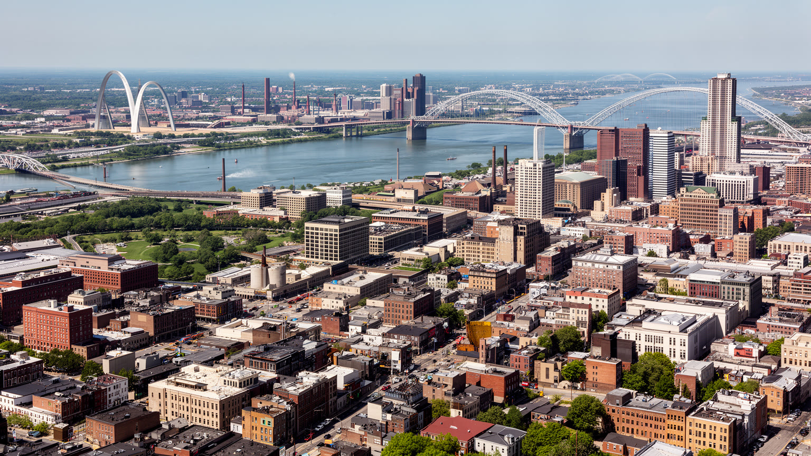
セントルイスを読むことは、ゲートウェイ・アーチの単純な象徴をほどき、川、産業、音楽、研究、住宅、人種分離、郊外化を同じ地図に置くことだ。都市は西部への玄関として国家拡張を語ってきたが、その歴史には先住民の土地、奴隷制、市民権、移民労働、黒人コミュニティの経験が含まれる。河港と鉄道は内陸経済を支え、病院と大学は知識産業を育て、ブルースや野球は住民の誇りを作る。一方で、中心市の人口減少、空き家、学校格差、警察への不信、自治体の分裂、公共交通の弱さは、都市圏の成長を不均等にしている。郊外の雇用や研究拠点だけを見れば安定した経済に見えるが、北側地区や低地の生活条件を見なければ都市の全体像は分からない。セントルイスの重要性は、巨大な世界金融都市ではなく、アメリカ内陸都市の成功と傷を凝縮している点にある。大河の物流、公共文化、医療研究、音楽の記憶を活かしながら、歴史的な分断へどこまで向き合えるかが、この街の未来を決める。象徴を見るだけでなく、橋の向こう、空き地の隣、病院の待合室、球場の帰り道まで歩く視点が必要である。セントルイスは縮小と再生を同時に経験する都市であり、空き地を緑地や住宅へ戻す小さな試みも、研究拠点への大きな投資も、同じ都市の選択である。成功を測る物差しは、都心の輝きだけでなく、分断された地区が未来へ参加できるかにある。